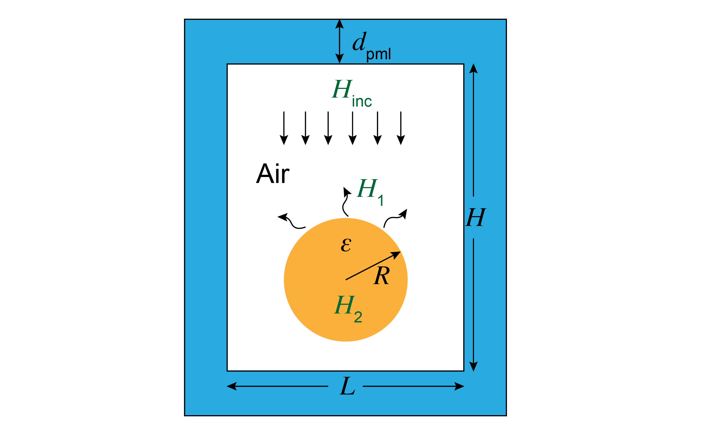
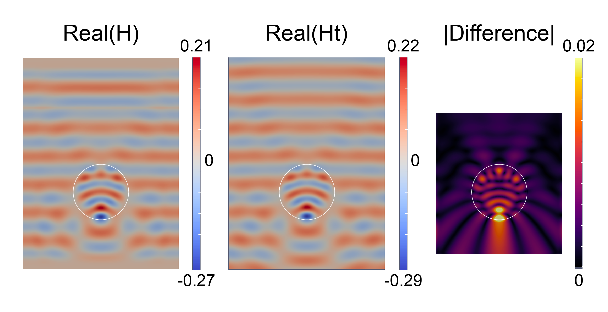

Tutorial 13: Electromagnetic scattering in 2D


In this tutorial, we will learn:
- How to formulate the weak form for a scalar time-harmonic electromagnetic problem
- How to implement a perfectly matched layer (PML) to absorb outgoing waves
- How to impose periodic boundary conditions in Gridap
- How to discretize PDEs with complex-valued solutions
Problem statement
We are going to solve a scalar electromagnetic wave scattering problem: a plane wave (Hz-polarized $H_{inc}$) scattering of a dielectric cylinder (of radius $R$ and permittivity $\varepsilon$), as illustrated below. The computational cell is of height $H$ and length $L$, and we employ a perfectly matched layer (PML) thickness of $d_{pml}$ to implement outgoing (radiation) boundary conditions for this finite domain.

From Maxwell's equations, considering a time-harmonic electromagnetic field, we can derive the governing equation of this problem in 2D (Helmholtz equation) [1]:
\[\left[-\nabla\cdot\frac{1}{\varepsilon(x)}\nabla -k^2\mu(x)\right] H = f(x),\]
where $k=\omega/c$ is the wave number in free space and $f(x)$ is the source term (which corresponds to a magnetic current density in Maxwell's equations).
In order to simulate this scattering problem in a finite computation cell, we need outgoing (radiation) boundary conditions such that all waves at the boundary would not be reflected back since we are simulating an infinite space. One commonly used technique to simulate such infinite space is through the so called "perfectly matched layers" (PML) [2]. Actually, PML is not a boundary condition but an artificial absorbing "layer" that absorbs waves with minimal reflections (going to zero as the resolution increases). There are many formulations of PML. Here, we use one of the most flexible formulations, the "stretched-coordinate" formulation, which takes the following replace in the PDE [3]:
\[\frac{\partial}{\partial x}\rightarrow \frac{1}{1+\mathrm{i}\sigma(u_x)/\omega}\frac{\partial}{\partial x},\]
\[\frac{\partial}{\partial y}\rightarrow \frac{1}{1+\mathrm{i}\sigma(u_y)/\omega}\frac{\partial}{\partial y},\]
where $u_{x/y}$ is the depth into the PML, $\sigma$ is a profile function (here we chose $\sigma(u)=\sigma_0(u/d_{pml})^2$) and different derivative corresponds to different absorption directions. Note that at a finite mesh resolution, PML reflects some waves, and the standard technique to mitigate this is to "turn on" the PML absorption gradually—in this case we use a quadratic profile. The amplitude $\sigma_0$ is chosen so that in the limit of infinite resolution the "round-trip" normal-incidence is some small number.
Since PML absorbs all waves in $x/y$ direction, the associated boundary condition is then usually the zero Dirichlet boundary condition. Here, the boundary conditions are zero Dirichlet boundary on the top and bottom side $\Gamma_D$ but periodic boundary condition on the left ($\Gamma_L$) and right side ($\Gamma_R$). The reason that we use a periodic boundary condition for the left and right side instead of zero Dirichlet boundary condition is that we want to simulate a plane wave excitation, which then requires a periodic boundary condition.
Consider $\mu(x)=1$ (which is mostly the case in electromagnetic problems) and denote $\Lambda=\operatorname{diagm}(\Lambda_x,\Lambda_y)$ where $\Lambda_{x/y}=\frac{1}{1+\mathrm{i}\sigma(u_{x/y})/\omega}$, we can formulate the problem as
\[\left\{ \begin{aligned} \left[-\Lambda\nabla\cdot\frac{1}{\varepsilon(x)}\Lambda\nabla -k^2\right] H &= f(x) & \text{ in } \Omega,\\ H&=0 & \text{ on } \Gamma_D,\\ H|_{\Gamma_L}&=H|_{\Gamma_R},&\\ \end{aligned}\right.\]
For convenience, in the weak form and Julia implementation below we represent $\Lambda$ as a vector instead of a diagonal $2 \times 2$ matrix, in which case $\Lambda\nabla$ becomes the element-wise product.
Numerical scheme
Similar to the previous tutorials, we need to construct the weak form for the above PDEs. After integral by part and removing the zero boundary integral term, we get:
\[a(u,v) = \int_\Omega \left[\nabla(\Lambda v)\cdot\frac{1}{\varepsilon(x)}\Lambda\nabla u-k^2uv\right]\mathrm{d}\Omega\]
\[b(v) = \int_\Omega vf\mathrm{d}\Omega\]
Notice that the $\nabla(\Lambda v)$ is also a element-wise "product" of two vectors $\nabla$ and $\Lambda v$.
Setup
We import the packages that will be used, define the geometry and physics parameters.
using Gridap
using GridapGmsh
using Gridap.Fields
using Gridap.Geometry
λ = 1.0 # Wavelength (arbitrary unit)
L = 4.0 # Width of the area
H = 6.0 # Height of the area
xc = [0 -1.0] # Center of the cylinder
r = 1.0 # Radius of the cylinder
d_pml = 0.8 # Thickness of the PML
k = 2*π/λ # Wave number
const ϵ₁ = 3.0 # Relative electric permittivity for cylinderDiscrete Model
We import the model from the geometry.msh mesh file using the GmshDiscreteModel function defined in GridapGmsh. The mesh file is created with GMSH in Julia (see the file ../assets/emscatter/MeshGenerator.jl). Note that this mesh file already contains periodic boundary information for the left and right side, and that is enough for gridap to realize a periodic boundary condition should be implemented.
model = GmshDiscreteModel("../models/geometry.msh")FE spaces
We use the first-order Lagrangian as the finite element function space basis. The Dirichlet edges are labeled with DirichletEdges in the mesh file. Since our problem involves complex numbers (because of PML), we need to assign the vector_type to be Vector{ComplexF64}.
Test and trial finite element function space
order = 1
reffe = ReferenceFE(lagrangian,Float64,order)
V = TestFESpace(model,reffe,dirichlet_tags="DirichletEdges",vector_type=Vector{ComplexF64})
U = V # mathematically equivalent to TrialFESpace(V,0)Numerical integration
We generate the triangulation and a second-order Gaussian quadrature for the numerical integration. Note that we create a boundary triangulation from a Source tag for the line excitation. Generally, we do not need such additional mesh tags for the source, we can use a delta function to approximate such line source excitation. However, by generating a line mesh, we can increase the accuracy of this source excitation.
Generate triangulation and quadrature from model
degree = 2
Ω = Triangulation(model)
dΩ = Measure(Ω,degree)Source triangulation
Γ = BoundaryTriangulation(model;tags="Source")
dΓ = Measure(Γ,degree)PML formulation
Here we first define a s_PML function: $s(x)=1+\mathrm{i}\sigma(u)/\omega,$ and its derivative ds_PML. The parameter LH indicates the size of the inner boundary of the PML regions. Finally, we create a function-like object Λ that returns the PML factors and define its derivative in gridap. Note that here we are defining a "callable object" of type Λ that encapsulates all of the PML parameters. This is convenient, both because we can pass lots of parameters around easily and also because we can define additional methods on Λ, e.g. to express the ∇(Λv) operation.
PML parameters
Rpml = 1e-12 # Tolerance for PML reflection
σ = -3/4*log(Rpml)/d_pml # σ_0
LH = (L,H) # Size of the PML inner boundary (a rectangular center at (0,0))PML coordinate stretching functions
function s_PML(x,σ,k,LH,d_pml)
u = abs.(Tuple(x)).-LH./2 # get the depth into PML
return @. ifelse(u > 0, 1+(1im*σ/k)*(u/d_pml)^2, $(1.0+0im))
end
function ds_PML(x,σ,k,LH,d_pml)
u = abs.(Tuple(x)).-LH./2 # get the depth into PML
ds = @. ifelse(u > 0, (2im*σ/k)*(1/d_pml)^2*u, $(0.0+0im))
return ds.*sign.(Tuple(x))
end
struct Λ<:Function
σ::Float64
k::Float64
LH::NTuple{2,Float64}
d_pml::Float64
end
function (Λf::Λ)(x)
s_x,s_y = s_PML(x,Λf.σ,Λf.k,Λf.LH,Λf.d_pml)
return VectorValue(1/s_x,1/s_y)
end
Fields.∇(Λf::Λ) = x->TensorValue{2,2,ComplexF64}(-(Λf(x)[1])^2*ds_PML(x,Λf.σ,Λf.k,Λf.LH,Λf.d_pml)[1],0,0,-(Λf(x)[2])^2*ds_PML(x,Λf.σ,Λf.k,Λf.LH,Λf.d_pml)[2])Weak form
In the mesh file, we labeled the cylinder region with Cylinder to distinguish it from other regions. Using this tag, we can assign material properties correspondingly (basically a function with different value in different regions). The weak form is very similar to its mathematical form in gridap.
Intermediate variables
labels = get_face_labeling(model)
dimension = num_cell_dims(model)
tags = get_face_tag(labels,dimension)
const cylinder_tag = get_tag_from_name(labels,"Cylinder")
function ξ(tag)
if tag == cylinder_tag
return 1/ϵ₁
else
return 1.0
end
end
τ = CellField(tags,Ω)
Λf = Λ(σ,k,LH,d_pml)Bi-linear term (from weak form)
Note that we use a element-wise product .* here for the vector-vector product $\Lambda \nabla$
a(u,v) = ∫( (∇.*(Λf*v))⊙((ξ∘τ)*(Λf.*∇(u))) - (k^2*(v*u)) )dΩSource term (uniform line source)
b(v) = ∫(v)*dΓSolver phase
We can assemble the finite element operator in Gridap with the bi-linear and linear form, then solve for the field.
op = AffineFEOperator(a,b,U,V)
uh = solve(op)Analytical solution
Theoretical analysis
In this section, we construct the semi-analytical solution to this scattering problem, for comparison to the numerical solution. This is possible because of the symmetry of the cylinder, which allows us to expand the solutions of the Helmholtz equation in Bessel functions and match boundary conditions at the cylinder interface. (In 3d, the analogous process with spherical harmonics is known as "Mie scattering".) For more information on this technique, see Ref [4]. In 2D cylinder coordinates, we can expand the plane wave in terms of Bessel functions (this is the Jacobi–Anger identity [5]):
\[H_0=\sum_m i^mJ_m(kr)e^{im\theta},\]
where $m=0,\pm 1,\pm 2,\dots$ and $J_m(z)$ is the Bessel function of the first kind.
For simplicity, we start with only the $m$-th component and take it as the incident part:
\[H_{inc}=J_m(kr).\]
For the scattered field, since the scattered wave should be going out, we can then expand it in terms of the Hankel function of the first kind (outgoing and incoming cylindrical waves are Hankel functions of the first and second kind [6]):
\[H_1=\alpha_mH_m^1(kr).\]
For the fields inside the cylinder, we require the field to be finite at $r=0$, which then constrains the field to be only the expansion of the Bessel functions:
\[H_2=\beta_mJ_m(nkr),\]
where $n=\sqrt{\varepsilon}$ is the refractive index.
Applying the boundary conditions (tangential part of the electric and magnetic field to be continuous):
\[H_{inc}+H_1=H_2|_{r=R},\]
\[\frac{\partial H_{inc}}{\partial r}+\frac{\partial H_1}{\partial r}=\frac{1}{\epsilon}\frac{\partial H_2}{\partial r}|_{r=R}.\]
After some math, we get:
\[\alpha_m=\frac{J_m(nkR)J_m(kR)^\prime-\frac{1}{n}J_m(kR)J_m(nkR)^\prime}{\frac{1}{n}H_m^1(kR)J_m(nkr)^\prime-J_m(nkr)H_m^1(kr)^\prime},\]
\[\beta_m = \frac{H_m^1(kR)J_m(kR)^\prime-J_m(kR)H_m^1(kR)^\prime}{\frac{1}{n}J_m(nkR)^\prime H_m^1(kR)-J_m(nkR)H_m^1(kR)^\prime},\]
where $^\prime$ denotes the derivative, and the derivatives of the Bessel functions are obtained with the recurrent relations:
\[Y_m(z)^\prime=\frac{Y_{m-1}(z)-Y_{m+1}(z)}{2}\]
where $Y_m$ denotes any Bessel functions (Hankel functions).
Finally, the analytical field is ($1/2k$ is the amplitude that comes from the unit line source excitation):
\[H(r>R)=\frac{1}{2k}\sum_m\left[\alpha_mi^mH_m^1(kr)+J_m(kr)\right]e^{im\theta}\]
\[H(r\leq R)=\frac{1}{2k}\sum_m\beta_mi^mJ_m(nkr)e^{im\theta}\]
Define the analytical functions
using SpecialFunctions
dbesselj(m,z) = (besselj(m-1,z)-besselj(m+1,z))/2
dhankelh1(m,z)= (hankelh1(m-1,z)-hankelh1(m+1,z))/2
α(m,n,z) = (besselj(m,n*z)*dbesselj(m,z)-1/n*besselj(m,z)*dbesselj(m,n*z))/(1/n*hankelh1(m,z)*dbesselj(m,n*z)-besselj(m,n*z)*dhankelh1(m,z))
β(m,n,z) = (hankelh1(m,z)*dbesselj(m,z)-besselj(m,z)*dhankelh1(m,z))/(1/n*dbesselj(m,n*z)*hankelh1(m,z)-besselj(m,n*z)*dhankelh1(m,z))
function H_t(x,xc,r,ϵ,λ)
n = √ϵ
k = 2*π/λ
θ = angle(x[1]-xc[1]+1im*(x[2]-xc[2]))+π
M = 40 # Number of Bessel function basis used
H0 = 0
if norm([x[1]-xc[1],x[2]-xc[2]])<=r
for m=-M:M
H0 += β(m,n,k*r)*cis(m*θ)*besselj(m,n*k*norm([x[1]-xc[1],x[2]-xc[2]]))
end
else
for m=-M:M
H0 += α(m,n,k*r)*cis(m*θ)*hankelh1(m,k*norm([x[1]-xc[1],x[2]-xc[2]]))+cis(m*θ)*besselj(m,k*norm([x[1]-xc[1],x[2]-xc[2]]))
end
end
return 1im/(2*k)*H0
endConstruct the analytical solution in finite element basis
uh_t = CellField(x->H_t(x,xc,r,ϵ₁,λ),Ω)Output and compare results
The simulated field is shown below. We can see that the simulated fields and the analytical solution matched closed except for the top and PML regions. This is because the simulated source generate plane waves in two directions but we only consider the downward propagating wave in the analytical solution and the PML effect is also not considered in the analytical solution. Therefore, we just need to focus on the "center" regions which excludes the PML and top region above the source, the difference is within 6% of the field amplitude integral. As we increase the resolution, this difference should decrease (until it becomes limited by the PML reflection coefficient from $\sigma_0$, the number of Bessel function basis $M$ or by floating-point error.)

Save to file and view
mkpath("output_path")
writevtk(Ω,"output_path/demo",cellfields=["Real"=>real(uh),
"Imag"=>imag(uh),
"Norm"=>abs2(uh),
"Real_t"=>real(uh_t),
"Imag_t"=>imag(uh_t),
"Norm_t"=>abs2(uh_t),
"Difference"=>abs(uh_t-uh)])Compare the difference in the "center" region
function AnalyticalBox(x) # Get the "center" region
if abs(x[1])<L/2 && abs(x[2]+0.5)<2.5
return 1
else
return 0
end
end
Difference=sqrt(sum(∫(abs2(uh_t-uh)*AnalyticalBox)*dΩ)/sum(∫(abs2(uh_t)*AnalyticalBox)*dΩ))
@assert Difference < 0.1References
[1] Wikipedia: Electromagnetic wave equation
[2] Wikipedia: Perfectly matched layer
[3] A. Oskooi and S. G. Johnson, “Distinguishing correct from incorrect PML proposals and a corrected unsplit PML for anisotropic, dispersive media,” Journal of Computational Physics, vol. 230, pp. 2369–2377, April 2011.
[4] Stratton, J. A. (1941). Electromagnetic Theory. New York: McGraw-Hill.
[5] Wikipedia: Jacobi–Anger expansion
[6] Wikipedia: Bessel function
This page was generated using Literate.jl.